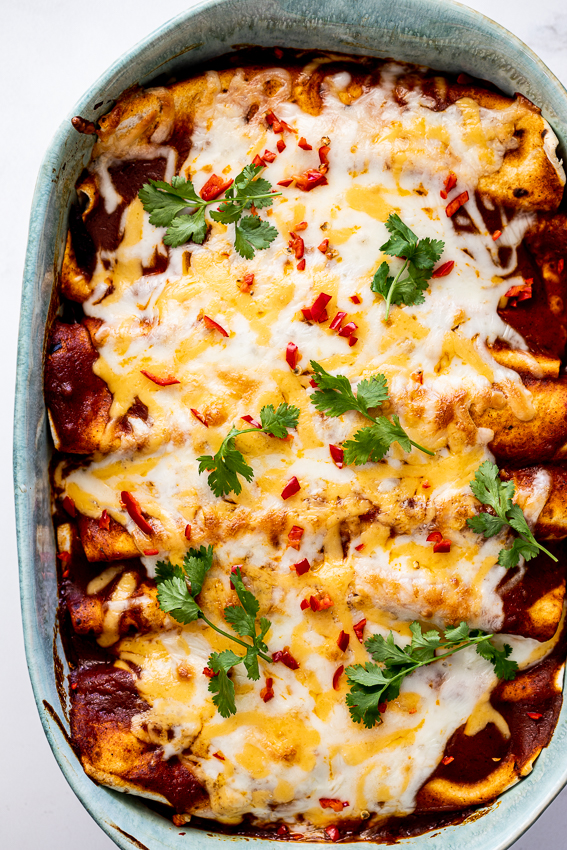

Vegetarian Enchiladas

Description
These are some good ol' Vegetarian Enchiladas using nothing but ingredients you could find at your local farmer's market. The lady and I were looking for some healthier bulk meal options for ourselves that didn't involve shoving copious amounts of meat down our gullets like usual, and came across this recipe online. It is quite delicious and the enchiladas themselves are very large so even one of these is enough to fill up a tiny stomach.
Ingredients
- 1-2 Tablespoons of olive oil
- 1 Onion diced
- 4 Garlic cloves, rough chopped
- 1 Red bell pepper diced
- 1 Zucchini, diced
- 1/2 Teaspoon of salt
- 1 can of corn kernels
- 1 Teaspoon of cumin
- 1 Teaspoon of coriander
- 1 Teaspoon of dried oregano
- 1 14 ounce can of black beans rinsed,drained
- We like to actually cook our own black beans in an instant pot beforehand. This usually helps us yield a lot more beans
- 1/4 cup chopped cilantro (optional)
- 2 cups store-bought enchilada sauce
- I like the green sauce more
- 8 Burrito sized tortillas (Size is preferential and varies depending on the size of your pan)
- 2 cups of grated cheese
- 8-10 ounces of pepperjack, Mexican blend, Cheddar, or Mozzarella
Steps
- Preheat oven to 400 degrees Fahrenheit
- Make The Filling:
- Heat oil in a large skillet over medium-high heat.
- Add onion and stir 2-3 minutes until fragrant
- Lower heat to medium and add bell pepper, zucchini, garlic and salt.
- Saute this until zucchini and peppers are tender (about 7-9 minutes)
- If mixture gets dry, just add a splash of water and lower the heat. Cover and gently steam until it all tenders up a bit.
- Fold in the fresh corn, cumin, coriander, and oregano.
- Saute for 3 more minutes.
- Remove from heat and add the black beans.
- Grease a 9 x 13 baking dish. Pour 1/2 cup of the enchilada sauce and spread it around the bottom until the pan is nicely coated
- Assemble your Enchiladas:
- Place 1/2 cup of the filling down the center of the tortilla and add 2-3 tablespoons of cheese over it. Wrap it up tightly, and then put it seam side DOWN over the sauce in the pan
- Repeat with the remaining 7 tortillas, nestlin them side by side.
- Pour the remaining Enchilada sauce over the enchiladas, leaving the edges exposed if you want crispy edges
- Sprinkle with remaining cup of cheese.
- Place in the hot oven, foiled for 20 minutes then uncovered for the last 6-10 minutes until cheese is nice and melty.
- Let stand for 10-15 minutes before serving (tented with foil).
- Scatter the remaining chopped cilantro over the enchiladas
- OPTIONAL: Serve with sour cream, hot sauce, and Mexican Slaw!
Notes